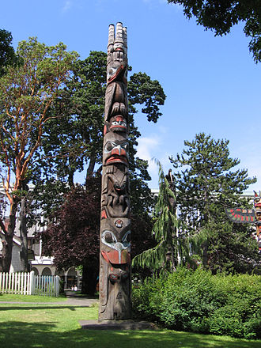

Performation |
|
| This video shows Kahkewistahaw Powwow 2019 which dancing with the music. They indigenous performed their traditional music and dancing for community audiences who included non-Aboriginal. They wear their costumes and enjoy the gathering with people. |
video form youtube https://youtu.be/jBbJATSjvGQ |
Art |
|
|
 wikipedia https://en.wikipedia.org/wiki/File:Totem_haida.jpg |
Totem Pole is created by First Nations which present commemorate ancestry, histical people and events. Totem Pole has several type for Pole types,Carving a pole and Cultural styles.Its height is mostly 3-18 metters. The History is over 200 years. |
Language |
|
| source is form youTube : https://youtu.be/09norcOxUD4 |
This audio is teaching people to speaking Salish Language,
which include numbers, Greetings, Phrases and story.
More information about the indigenous's Language
http://www.native-languages.org/famsal_words.htm
|